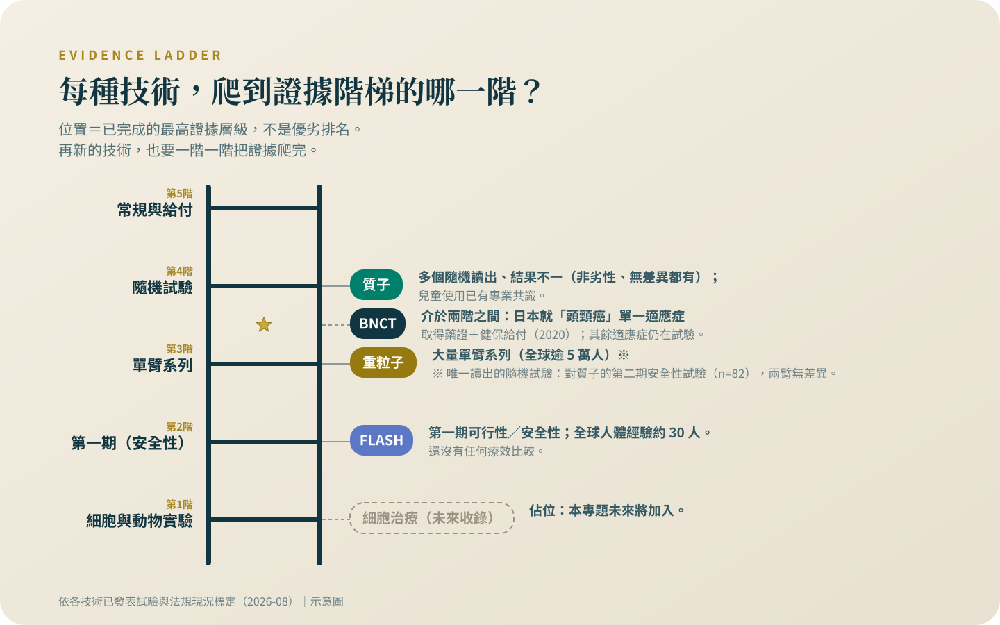

新，不等於比較好
四種新放療是四個不同的軸，不是同一把尺的四格。給你證據階梯、五個判準，和聽出諮詢還是推銷的方法。
會點開這個專題的人，多半是標準治療走完或走不下去、或替家人四處找選項的人。第一篇不介紹任何治療，先給你一把尺——因為在最脆弱的時候，判斷的方法比新知重要。
警語一（排擠效應）：這個專題裡的治療，多數是自費、多數在標準治療之外。做決定之前要先知道，它們排擠掉的通常不是時間，是三樣真正有價值的東西：還沒用完的標準治療、後線會用到的錢、以及臨床試驗的資格（很多試驗會排除近期接受過其他實驗性治療的人）。還有一樣更難察覺——體能。在一個沒有效果的療程裡耗掉的體力，等到真正有用的選項出現時，可能已經撐不住了。所以問題不是「這個值不值得試」，是「做了這個，我放棄掉什麼」。
讀完這個專題約花一小時；它談的每個決定，代價動輒是幾十萬、幾百萬元的積蓄，和一張可能拿不回來的臨床試驗入場券。
警語二（找對的醫師）：這一類決定不要一個人做，也不要只聽提供這項治療的人說。你要找的是一個願意告訴你「這個不適合你」的醫師——如果對方從頭到尾沒有說過任何一句「不適合誰」，那不是諮詢，是推銷。
先說我的位置：質子與熱治療都是我自己領域內的技術，我服務的醫院也有相關設備。所以這個專題的每一條線，我畫得比別人更緊，不是更鬆。
準、重、快、巧——四個軸，不是同一把尺的四格
質子改變的是劑量在哪裡停：射線走到腫瘤深度就停，後方正常組織少挨打——「準」，見〈質子：打得準，然後呢〉。重粒子改變的是到了之後做什麼：一樣停在定點，但終點的破壞型態不同——「重」，重不等於比較好，見〈重粒子：比較重，不等於比較好〉。FLASH 改變的是多快給完：劑量一瞬間給完，賭的是正常組織與腫瘤對速度的反應不同——「快」，見〈FLASH：一秒打完的放療，還在第一期〉。BNCT 改變的是怎麼選中目標：先讓腫瘤細胞吃進硼、再用中子引爆，選擇性做在細胞層級——「巧」，見〈BNCT：不是用瞄準的放療〉。準、重、快、巧是四個不同的軸，不是同一把尺上的四格；「重粒子比質子強、質子比光子強」這種排法，第一步就錯了。

證據的階梯，和這個領域自己繳過的學費
證據是一座階梯：細胞與動物實驗、第一期安全性試驗、沒有對照組的病人系列，最上層是隨機比較試驗——把病人抽籤分成兩組直接比結果。四種技術各站在不同的階上，排位本身就是資訊。隨機比較為什麼要緊？因為這個領域被打過臉，不只一次。
RTOG 0617：第三期不可手術的肺癌，隨機比較 60 Gy 與 74 Gy。「劑量更高、殺得更多」物理上說得通，結果高劑量組中位存活（一半的人活過這個時間）20.3 個月、標準組 28.7 個月——多給的劑量讓病人活得更短（風險比 1.38，95% 信賴區間 1.09–1.76；風險比是兩組事件發生速度的比值，信賴區間是估計合理的擺盪範圍）[1]。RTOG 0126：一千五百多位中風險攝護腺癌病人，高劑量把八年的抽血復發訊號從 35% 壓到 20%，整體存活卻是 76% 對 75%，副作用更多[2]。第三個例子是質子自己：肺癌的隨機比較裡，質子組心臟劑量整段較低——劑量圖確實漂亮——臨床上卻沒換到好處[3]。完整試驗紀錄在〈質子：打得準，然後呢〉；那是單一試驗、較舊技術、單一癌別，不能讀成「質子沒效」，它能證明的只有：劑量圖漂亮，不等於病人過得好。這個領域繳過學費，所以「機轉合理」在我這裡是假說的起點，不是療效的證明。
警語一不是嚇你：錢、資格、體能，各自的證據
置頂警語每一句背後都有東西。先講錢：美國一份全國代表性樣本裡，18 到 64 歲的癌症存活者 28.4% 曾因癌症借錢、破產、付不出醫療費或做出其他重大財務犧牲[4]；另一份研究把癌症登記串上破產紀錄：申請破產者的死亡風險是配對對照組的 1.79 倍（95% 信賴區間 1.64–1.96）[5]——這是觀察性資料，只能說「相關」，不能讀成花錢會害死人。兩筆都是美國數字，自付結構與台灣不同；本土的代表性研究我查不到，不會編一個台灣數字給你。
試驗資格這關。大型試驗常明文排除近期接受過實驗性治療的人：頭頸癌的 KEYNOTE-048 就寫明「第一劑前四週內用過實驗性藥物或器材」不能收[6]；ASCO 與 Friends of Cancer Research 出過建議呼籲別再這樣排除——這份建議的存在，正說明慣例普遍如此[7]。各試驗條文與時間窗不同——不是「做過就永遠進不去」，是「一扇門暫時關上，關多久看條文」；報名前把完整治療清單交給試驗團隊判斷。至於體能，我不掛引用——每位腫瘤科醫師都看過：在無效療程裡耗掉的體力和器官儲備，不會退還。
五個判準，聽出對面是諮詢還是推銷
警語二落到操作上，是五個判準。一，他說過任何一句「這個不適合誰」嗎——真用過這項技術的醫師，一定看過不適合的病人。二，你問「有沒有隨機比較試驗」，他是正面回答，還是轉去講原理——原理漂亮值多少，上一節說過了。三，他有沒有主動提臨床試驗。四，他有沒有幫你算排擠——錢付掉後，後線治療和試驗自付額還付不付得起。五，他推薦的，和他自己執行、他的單位收費的項目，重疊度有多高。五題不是拿來當場質問誰，是你走出診間後的覆盤清單。

臨床試驗是真的選項，不是後門
找試驗有兩個官方入口：國際的 ClinicalTrials.gov，可用癌別加國家查[8]；台灣端 2026 年的正確入口是衛福部食藥署「台灣藥品臨床試驗資訊網」[9]——舊的試驗資訊網站已於關站公告中說明功能關閉並導向新站——如果你存過舊網址，改用上面的新入口[10]。查到的編號帶去門診，請主治醫師幫你核對收案條件。
美國國家癌症研究所的病人頁面寫得直白：研究中的治療「可能不比標準治療好，甚至可能不如標準治療」，還可能有更差的副作用、更多回診與交通住宿開銷[11]。台灣的藥品優良臨床試驗作業準則也把底線寫進條文：預期利益應超過可能風險[12]。試驗不是「免費拿新藥」，是誠實的交換：你拿到嚴謹的照護和一個機會，不是承諾；哪些費用由試驗吸收、哪些自己出，簽同意書前逐條確認。
什麼時候該把安寧放上桌——比多數人以為的早
安寧出現在這裡，因為它正是最常被閃亮的東西擠掉的選項。新診斷轉移性肺癌的隨機試驗裡，確診即同步緩和照護那組，十二週時生活品質較好、憂鬱較少，中位存活也較長（11.6 對 8.9 個月）[13]——存活是單一試驗的次要觀察，不能寫成「安寧會延長壽命」。Cochrane 統合七個試驗、一千六百多人：生活品質有改善，但效果量小、確定性低；有存活資料的四個試驗、八百人裡，存活沒有差異（死亡風險比 0.85，95% 信賴區間 0.56–1.28，確定性極低）[14]。合起來：早點談安寧不會讓你走得比較快，也還沒有證據讓你活得更久；它換到的，是比較好過的日子。「早」不是臨終，是還在治療時就同時照會。安寧共照與居家安寧怎麼轉介各院不同，問你的個管師。
這個專題不會出現的東西，和下次諮詢的五句話
最後說收錄門檻。出現在本專題的治療，至少要有任一司法管轄區的正式身分：試驗註冊編號、藥證或醫材許可、特管核准、或恩慈專案。跨不過這條線、只有見證和轉傳的，不會出現。這條線本身就是工具：推銷的東西連正式身分都查不到，你不需要再查第二件事。各種身分證明什麼、不證明什麼，是下一篇〈核准、給付、有效，是三件不同的事〉的主場。
有句話會在每一篇重複出現，因為它是這把尺的地基：對絕大多數常見癌症的病人，決定結果的是期別、亞型、和有沒有把療程好好做完，不是用哪一種粒子。下次諮詢，把這五句話直接問出口——這個治療有沒有隨機比較試驗，比的對象是什麼？以我的情況，有什麼理由不適合？有沒有我可以加入的臨床試驗？做了這個，我放棄掉什麼？這筆錢付下去，後線的治療還付不付得起？對方怎麼接，比任何一頁彩色簡介都誠實。
查證日期：2026 年 8 月。
五個判準不是拿來質問醫師的，是你走出診間後的覆盤工具。下次諮詢前，把文末那五句話抄進手機備忘錄；對方怎麼接，就是你需要的答案。查任何療法，先查它有沒有正式身分。
參考資料
Bradley, J. D., Paulus, R., Komaki, R., et al. (2015). Standard-dose versus high-dose conformal radiotherapy with concurrent and consolidation carboplatin plus paclitaxel with or without cetuximab for patients with stage IIIA or IIIB non-small-cell lung cancer (RTOG 0617): a randomised, two-by-two factorial phase 3 study. The Lancet Oncology, 16(2), 187-199. DOI: 10.1016/S1470-2045(14)71207-0
Michalski, J. M., Moughan, J., Purdy, J., et al. (2018). Effect of Standard vs Dose-Escalated Radiation Therapy for Patients With Intermediate-Risk Prostate Cancer: The NRG Oncology RTOG 0126 Randomized Clinical Trial. JAMA Oncology, 4(6), e180039. DOI: 10.1001/jamaoncol.2018.0039
Liao, Z., Lee, J. J., Komaki, R., et al. (2018). Bayesian Adaptive Randomization Trial of Passive Scattering Proton Therapy and Intensity-Modulated Photon Radiotherapy for Locally Advanced Non-Small-Cell Lung Cancer. Journal of Clinical Oncology, 36(18), 1813-1822. DOI: 10.1200/JCO.2017.74.0720
Yabroff, K. R., Dowling, E. C., Guy, G. P. Jr., et al. (2016). Financial Hardship Associated With Cancer in the United States: Findings From a Population-Based Sample of Adult Cancer Survivors. Journal of Clinical Oncology, 34(3), 259-267. DOI: 10.1200/JCO.2015.62.0468
Ramsey, S. D., Bansal, A., Fedorenko, C. R., et al. (2016). Financial Insolvency as a Risk Factor for Early Mortality Among Patients With Cancer. Journal of Clinical Oncology, 34(9), 980-986. DOI: 10.1200/JCO.2015.64.6620
ClinicalTrials.gov（美國國家醫學圖書館）。KEYNOTE-048 試驗紀錄（NCT02358031）：收案與排除條件原文。
Osarogiagbon, R. U., Vega, D. M., Fashoyin-Aje, L., et al. (2021). Modernizing Clinical Trial Eligibility Criteria: Recommendations of the ASCO-Friends of Cancer Research Prior Therapies Work Group. Clinical Cancer Research, 27(9), 2408-2415. DOI: 10.1158/1078-0432.CCR-20-3854
ClinicalTrials.gov（美國國家醫學圖書館臨床試驗註冊庫）。ClinicalTrials.gov。
衛生福利部食品藥物管理署。台灣藥品臨床試驗資訊網。
財團法人醫藥品查驗中心。台灣藥物臨床試驗資訊網（關站公告：功能即日起關閉，導向衛生福利部新站）。
National Cancer Institute（美國國家癌症研究所）。Why Participate in a Clinical Trial?（頁面更新 2024-11-18）。
全國法規資料庫。藥品優良臨床試驗作業準則（修正日期民國 109 年 8 月 28 日）。
Temel, J. S., Greer, J. A., Muzikansky, A., et al. (2010). Early palliative care for patients with metastatic non-small-cell lung cancer. The New England Journal of Medicine, 363(8), 733-742. DOI: 10.1056/NEJMoa1000678
Haun, M. W., Estel, S., Rücker, G., et al. (2017). Early palliative care for adults with advanced cancer. Cochrane Database of Systematic Reviews, (6), CD011129. DOI: 10.1002/14651858.CD011129.pub2
本文為一般性衛教說明，整理自公開發表的研究與官方公告，不能取代面對面的診療。研究結果適用的族群通常有嚴格條件，是否適用於你的情況，請與你的主治醫師討論。請勿依據本文自行調整、中斷或更換治療。
← 回到次世代治療專題